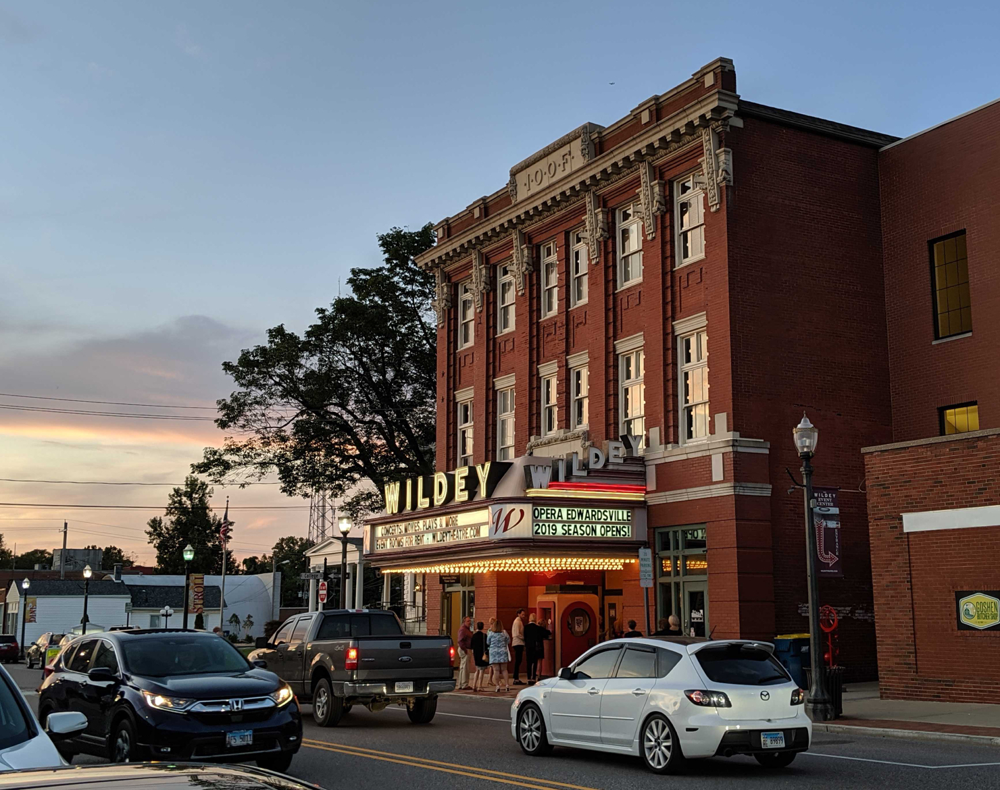
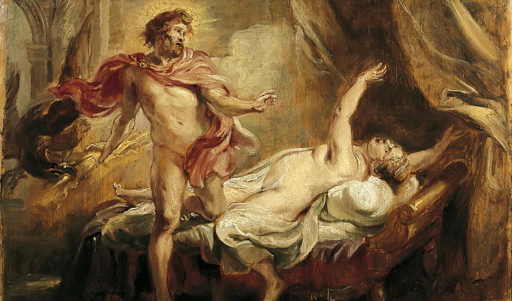
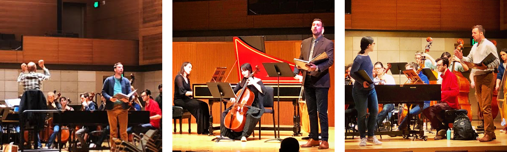
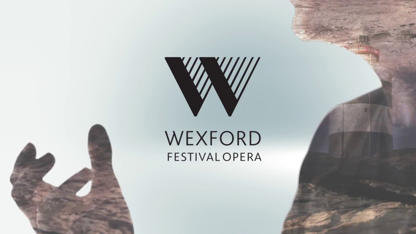
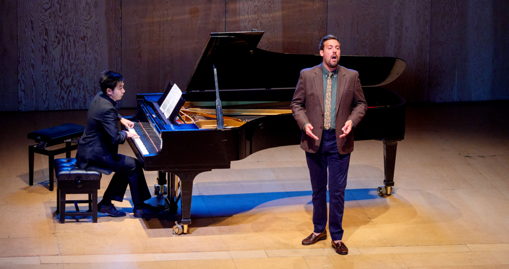
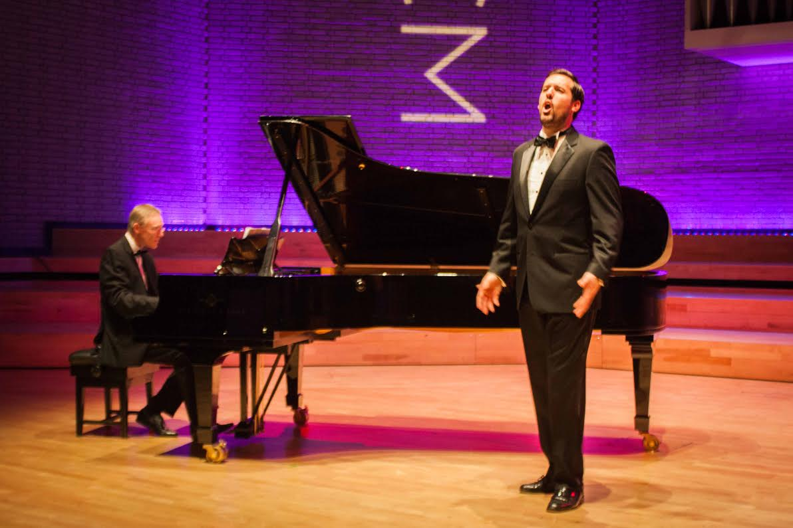

Audio samples
Updates
Chase Hopkins named General Manager at Haymarket Opera Company in Chicago.
August 2019 to Present

Haymarket Opera Company enriches the musical community of Chicago and the Midwest with performances of 17th- and 18th-century music.
Founded by Artistic Director Craig Trompeter, HOC is a fixture of the Chicago classical music scene and is swiftly becoming a leader of historically inspired 17th and 18th century opera. Haymarket has been praised in the New York Times for it's "finely played, carefully sung, lovingly detailed period performance" and continues to surprise and delight audiences with rarely performed works from the Baroque and Classical period. Passionate about this repertoire, Hopkins joins Haymarket brining relevant experience as a performer and Artistic Director at Opera Edwardsville.
Chase Hopkins named Artistic Director of Opera Edwardsville.
December 2018 to May 2018

In 2018, Chase Hopkins founded Opera Edwardsville, a non-profit based just outside of St. Louis, with the bold vision for a new arts organization dedicated to arts education and cultural enrichment through classical music and live performance. After a successful first year, Chase continues to serve as the Artistic Director.
OE is grateful to have the support of soprano Christine Brewer as an offical Artistic Advisor.
OE produces two main concerts a year, several house concerts, educational programming with the nearby university, and community collaborations as well. OE is proud to call the historic Wildey Theatre home for its main performances.
Previous performances
"Jupiter" in Handel's 'Semele'
American Bach Soloists, San Francisco
July 29 to August 15, 2018
 
The Death of Semele, Rubens (1577-1640)
Conducted by Jeffrey Thomas.
Reviews:
"That the dealings between Semele and Jupiter landed with emotional force was due to the strong performances by soprano Arwen Myers and tenor Chase Henry Hopkins, both of whom delivered their assignments with tenderness and gusto… Hopkins’ elegant phrasing – especially in the famous “Where’er you walk” – conjured up an image of Jupiter as a suave seducer”" — SAN FRANCISCO CHRONICLE
Wexford Festival Opera, Ireland
September 10 to November 10, 2018

"Trin" in 'Fanciulla del West' by Giacomo Puccini.
In Recital: Haydn, Mozart, Beethoven and Schubert, Britten-Pears Young Artist Programme, United Kingdom
June 17-24, 2018

Chase Henry Hopkins performing with Richard Fu
A concert of repertoire from the classical period presented by the Britten-Pears Young Artists.
The concert was coached by Internationally acclaimed Mezzo-soprano, Anne Sofie von Otter and Kritian Bezuidenhout, one of today's most versatile keyboard players. The concert took place as part of the Aldeburgh Festival in June in collaboration with John Fisher, Head of Music at the Metropolitan Opera, Julia Faulkner (Soprano) and Matthew Rose (Bass). Learn more:
Britten-Pears Young Artist Programme
"Septimus" in Handel’s 'Theodora'
Britten-Pears Young Artists Programme, United Kingdom
March 23 to April 1, 2018
Conducted by Christian Curnyn with direction and masterclass from Sarah Connolly.
The Britten–Pears Young Artist Programme was founded over 40 years ago by Benjamin Britten and Peter Pears to provide high-level performance training for the world’s best emerging professional musicians. Renowned British Handelians Sarah Connolly and Christian Curnyn prepare this dramatic oratorio in masterclasses before presenting a concert performance as part of Snape Maltings' Easter Weekend programme.
Britten-Pears Young Artist Programme
"Oronte" in Handel’s 'Alcina,' United Kingdom
November 30, 2017

Shown above: Chase Hopkins and Elizabeth Humphries performing Handel's 'Alcina' at the Two Moors Festival in 2017.
The performance took place as a part of Bob Boas' "Music at 22 Mansfield Street" series. The concert was a fundraiser in support of the John Adie Memorial Fund, an initiative of the Two Moors Festival.
Wexford Festival Opera, Ireland
October 19 to November 5, 2017

"Dormont" in ‘La Scala di Seta,’ by Giacomo Rossini.
Reviews:
"Chase Hopkins' Dormont was a strong, convincing presence...[and] the finale scene, which saw the entire cast tied up with the silken ladder before the wriggled free from Dormont's clutches and accusations, bubbled nicely." — OPERA TODAY
"Chase Hopkins legt den Dormont recht hektisch an und überzeugt mit lyrischem Tenor." — ONLINE MUSIK MAGAZIN
"Chase Hopkins, an American tenor, played the part of Dormont, producing a thoughtful and disciplined performance." — OPERAWIRE
'Margherita' by Jacopo Foroni, chorus.
Conducted by Timothy Myers and directed by Michael Sturm.
'Risurreszione' by Franco Alfano, chorus.
Conducted by Francesco Cilluffo and directed by Rosetta Cucchi.
Festival of Aix-en-Provence, France
July 3-22, 2017

Festival of Aix-en-Provence 'The Rakes Progress' 2017
'The Rake’s Progress' by Igor Stravinsky, chorus.
Conducted by Daniel Harding and directed by Simon McBurney.

Festival of Aix-en-Provence 'Don Giovanni' 2017
'Don Giovanni' by Wolfgang Amadeus Mozart, chorus.
Conducted by Jérémie Rhorer and directed by Jean-François Sivadier.
"Eisenstein" in Strauss’ 'Die Fledermaus,' United Kingdom
May 2017
Directed by Lee Blakeley and conducted by Tim Dean.
Reviews:
"Chase Henry Hopkins was a splendidly glaikit cuckolded Tory MP as Eisenstein" (5 Stars) — THE HERALD
"American tenor Chase Henry Hopkins was a convincingly bluff Eisenstein" (4 Stars) — BACHTRACK
About
Biography
‘L’elisir d’amore’ 2015
American tenor, Chase Henry Hopkins has been described as a “strong and convincing presence” (Opera Today) and praised for delivering “thoughtful and disciplined” performances (Operawire). For his performance of ‘Jupiter’ in Handel’s Semele with Conductor Jeffrey Thomas and the American Bach Soloists, the San Francisco Chronicle reported: “That the dealings between Semele and Jupiter landed with emotional force was due to the strong performances by soprano Arwen Myers and tenor Chase Henry Hopkins, both of whom delivered their assignments with tenderness and gusto… Hopkins’ elegant phrasing – especially in the famous “Where’er you walk” – conjured up an image of Jupiter as a suave seducer” (The San Francisco Chronicle).
Previous operatic roles include 'Don Basilio'Le Nozze di Figaro at the Royaumont Festival in France, conducted by Rene Jacobs, ‘Septimius' Theodora with the Britten Pears Young Artists at Snape Maltings in England, conducted by Christian Curnyn and led by Sarah Connolly, 'Don Ottavio' Don Giovanni, 'Nemorino' L'elisir d'amore, Don Basilio' Le Nozze di Figaro conducted by Jonathon Cohen, 'Jupiter' Semele, with the American Bach Soloists in San Francisco, ‘Eisenstein’ in Strauss’ Die Fledermaus, directed by Lee Blakeley, 'Oronte' Alcina with the Two Moors Festival in England, and 'Telemaco' Il Ritorno d'Ulisse in Patria, conducted by Roger Hamilton. Previous concert performances includes Mozart's Mass in C minor, Haydn's Nelson Mass, Monteverdi's Vespers 1610, and Handel's Alexander's Feast.
In 2018, Chase founded Opera Edwardsville, a non-profit arts organization located near St. Louis in southern Illinois. Opera Edwardsville’s programming provides cultural enrichment, arts education, and community development through performances and masterclasses. Opera Edwardsville welcomes Christine Brewer, Craig Terry, Julie Tabash Kelshiemer, Penelope Cousland, and Karen Brunssen in performance and masterclass in the 2019 Season. Opera Edwardsville has recently been awarded a Meridian Grant for it’s educational programming and has been recognized as 2018’s “Best Addition” by the Illinois Great Rivers and Routes Tourism Bureau. For more information, visit www.OperaEdwarsdville.org.
A native of Edwardsville, Chase was recruited by Opera Theatre of St. Louis to train at the age of sixteen. Musical training includes the Dutch National Opera Academy in Amsterdam with Rosemary Joshua and Olivier Lallouette and as a member of the Royal Conservatoire of Scotland’s Alexander Gibson Opera School with Scott Johnson and Paul Plummer. Chase completed his Masters in music at the Royal Northern College of Music in England with Lynne Dawson and Nick Powell and graduated ‘cum laude’ with a Bachelors in Music and Arts Administration from Northwestern University with Karen Brunssen in Chicago.